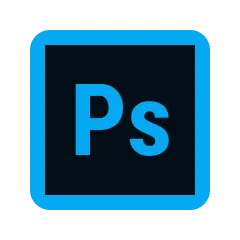

HTML/CSS
Webサイトを１から構築できます。レスポンシブ対応、基本的なコーディングは対応可能です。ホバーやスライドショーなども実装できます。
Javascript
ライブラリの実装、基本的なアニメーション（Jquery）を使用した動的なサイト構築が可能です。
illustrator
簡単なロゴ作成、名刺作成に使用しています。基本機能は問題なく使用できます。

Photoshop
バナー作成やワイヤーフレーム・デザインカンプ作成に使用しています。
figma、Adobe XDをメインで使用していますが、基本的なツールは問題なく使用することができます。
Adobe XD, Figma
ワイヤーフレーム、デザインカンプ作成の際にメインで使用しています。そのため、スムーズに作業することが可能です。